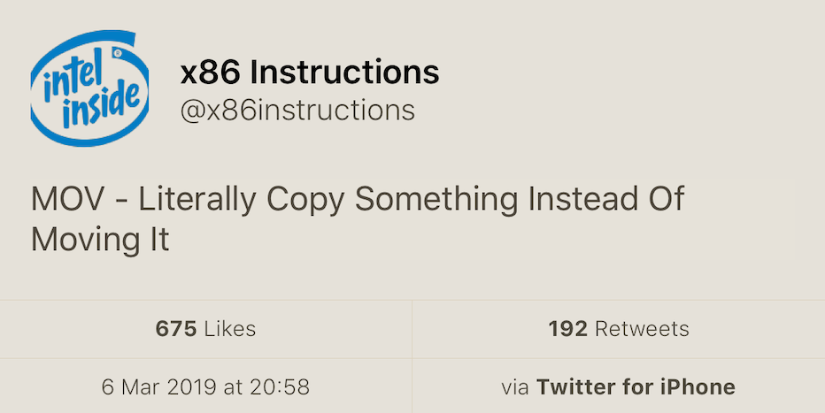
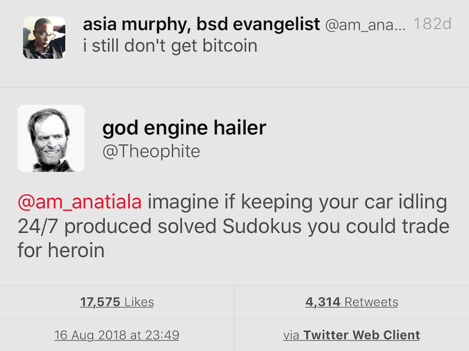

2019-03-21
std::spanhttps://mariusbancila.ro/blog/2019/03/13/little-known-cpp-function-try-block/
int foo() { throw std::runtime_error("oops..."); }
int main() try {
foo();
return 0;
} catch (...) {
return -1;
}https://www.reddit.com/r/cpp/comments/b0jzzy/littleknown_c_functiontryblock/
int foo() { throw std::runtime_error("oops..."); }
struct bar {
bar()
try : data(foo()) {}
catch (std::exception const & e) { std::cout << e.what() << '\n'; }
private:
int data;
};
int main() {
bar b;
}An open source library for face detection in images. The face detection speed can reach 1500FPS. The work is partly supported by the Science Foundation of Shenzhen (Government grant).
https://www.reddit.com/r/cpp/comments/abcgci/your_favorite_c_code/
https://vorbrodt.blog/2019/03/18/micro-benchmarks/
Microsoft SEAL is an easy-to-use and powerful homomorphic encryption library.
Project page: https://www.microsoft.com/en-us/research/project/microsoft-seal
Code: https://github.com/Microsoft/SEAL (MIT)
Homomorphic Encryption refers to a new type of encryption technology that allows computation to be directly on encrypted data, without requiring any decryption in the process. The results of the computations are encrypted, and can be revealed only by the owner of the secret key.
Barry Revzin: https://brevzin.github.io/c++/2018/09/01/quirks-ctad/

